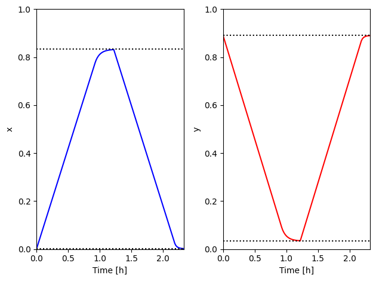
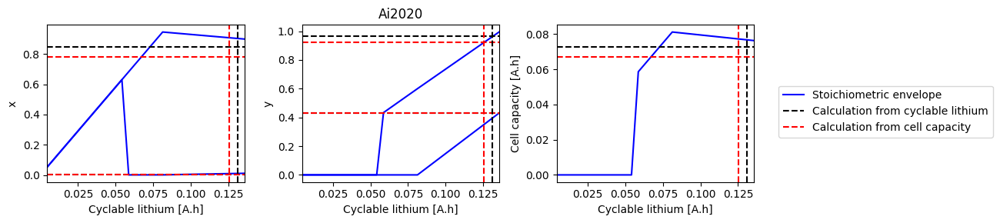
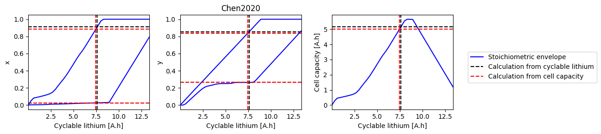
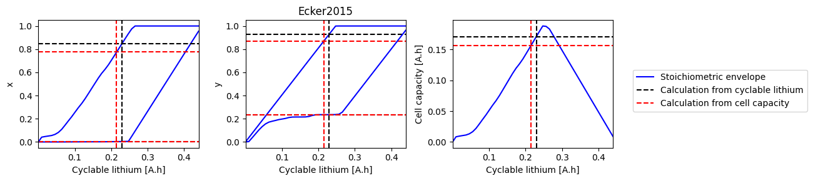
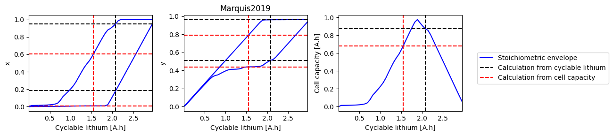
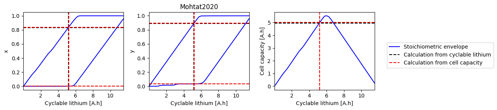
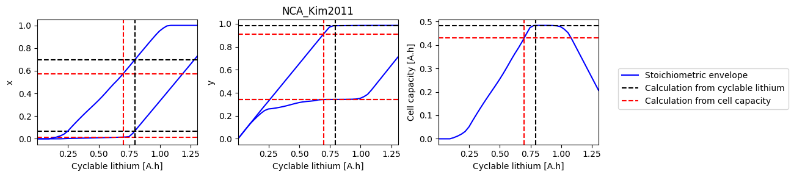
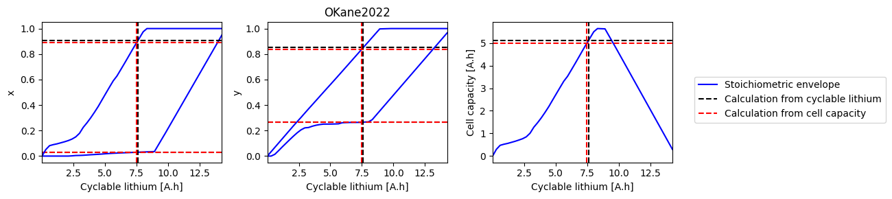

Tip
An interactive online version of this notebook is available, which can be
accessed via

Alternatively, you may download this notebook and run it offline.
Electrode State of Health#
This notebook demonstrates some utilities to work with electrode State of Health (also sometimes called electrode stoichiometry), using the algorithm from Mohtat et al [1]
[1] Mohtat, P., Lee, S., Siegel, J. B., & Stefanopoulou, A. G. (2019). Towards better estimability of electrode-specific state of health: Decoding the cell expansion. Journal of Power Sources, 427, 101-111.
[26]:
%pip install "pybamm[plot,cite]" -q # install PyBaMM if it is not installed
import matplotlib.pyplot as plt
import numpy as np
import pybamm
zsh:1: no matches found: pybamm[plot,cite]
Note: you may need to restart the kernel to use updated packages.
Create and solve model#
[27]:
spm = pybamm.lithium_ion.SPM()
experiment = pybamm.Experiment(
[
"Charge at 1C until 4.2V",
"Hold at 4.2V until C/50",
"Discharge at 1C until 2.8V",
"Hold at 2.8V until C/50",
]
)
parameter_values = pybamm.ParameterValues("Mohtat2020")
sim = pybamm.Simulation(spm, experiment=experiment, parameter_values=parameter_values)
spm_sol = sim.solve()
spm_sol.plot(
[
"Voltage [V]",
"Current [A]",
"Negative electrode stoichiometry",
"Positive electrode stoichiometry",
]
)
[27]:
<pybamm.plotting.quick_plot.QuickPlot at 0x17f99c580>
Solve for electrode SOH variables#
Given a total amount of cyclable lithium capacity, \(Q_{Li}\), electrode capacities, \(Q_n\) and \(Q_p\), and voltage limits, \(V_{min}\) and \(V_{max}\), we can solve for the min and max electrode SOCs, \(x_0\), \(x_{100}\), \(y_0\), and \(y_{100}\), and the cell capacity, \(C\), using the algorithm adapted from Mohtat et al [1]. First, we find \(x_{100}\) and \(y_{100}\) using
Note that Mohtat et al use \(n_{Li} = \frac{3600 Q_{Li}}{F}\) instead. Then, we find \(Q\) using
Finally, \(x_0\) and \(y_0\) are simply defined as
We implement this in PyBaMM as an algebraic model.
[28]:
param = pybamm.LithiumIonParameters()
Vmin = 2.8
Vmax = 4.2
Q_n = parameter_values.evaluate(param.n.Q_init)
Q_p = parameter_values.evaluate(param.p.Q_init)
Q_Li = parameter_values.evaluate(param.Q_Li_particles_init)
U_n = param.n.prim.U
U_p = param.p.prim.U
T_ref = param.T_ref
[29]:
# First we solve for x_100 and y_100
model = pybamm.BaseModel()
x_100 = pybamm.Variable("x_100")
y_100 = (Q_Li - x_100 * Q_n) / Q_p
y_100_min = 1e-10
x_100_upper_limit = (Q_Li - y_100_min * Q_p) / Q_n
model.algebraic = {x_100: U_p(y_100, T_ref) - U_n(x_100, T_ref) - Vmax}
model.initial_conditions = {x_100: x_100_upper_limit}
model.variables = {"x_100": x_100, "y_100": y_100}
sim = pybamm.Simulation(model, parameter_values=parameter_values)
sol = sim.solve([0])
x_100 = sol["x_100"].data[0]
y_100 = sol["y_100"].data[0]
for var in ["x_100", "y_100"]:
print(var, ":", sol[var].data[0])
# Based on the calculated values for x_100 and y_100 we solve for x_0
model = pybamm.BaseModel()
x_0 = pybamm.Variable("x_0")
Q = Q_n * (x_100 - x_0)
y_0 = y_100 + Q / Q_p
model.algebraic = {x_0: U_p(y_0, T_ref) - U_n(x_0, T_ref) - Vmin}
model.initial_conditions = {x_0: 0.1}
model.variables = {
"Q": Q,
"x_0": x_0,
"y_0": y_0,
}
sim = pybamm.Simulation(model, parameter_values=parameter_values)
sol = sim.solve([0])
for var in ["Q", "x_0", "y_0"]:
print(var, ":", sol[var].data[0])
x_100 : 0.8333742766485323
y_100 : 0.03354554691532985
Q : 4.968932683689383
x_0 : 0.0015118453536460618
y_0 : 0.8908948803914054
This is implemented in PyBaMM as the ElectrodeSOHSolver class
[30]:
esoh_solver = pybamm.lithium_ion.ElectrodeSOHSolver(parameter_values, param)
inputs = {"V_min": Vmin, "V_max": Vmax, "Q_n": Q_n, "Q_p": Q_p, "Q_Li": Q_Li}
esoh_sol = esoh_solver.solve(inputs)
for var in ["x_100", "y_100", "Q", "x_0", "y_0"]:
print(var, ":", esoh_sol[var])
x_100 : 0.833374276202919
y_100 : 0.0335455473745959
Q : 4.968932679279884
x_0 : 0.0015118456462390713
y_0 : 0.890894880089848
Check against simulations#
Plotting the SPM simulations against the eSOH calculations validates the min/max stoichiometry calculations
[31]:
t = spm_sol["Time [h]"].data
x_spm = spm_sol["Negative electrode stoichiometry"].data
y_spm = spm_sol["Positive electrode stoichiometry"].data
x_0 = esoh_sol["x_0"].data * np.ones_like(t)
y_0 = esoh_sol["y_0"].data * np.ones_like(t)
x_100 = esoh_sol["x_100"].data * np.ones_like(t)
y_100 = esoh_sol["y_100"].data * np.ones_like(t)
fig, axes = plt.subplots(1, 2)
axes[0].plot(t, x_spm, "b")
axes[0].plot(t, x_0, "k:")
axes[0].plot(t, x_100, "k:")
axes[0].set_ylabel("x")
axes[1].plot(t, y_spm, "r")
axes[1].plot(t, y_0, "k:")
axes[1].plot(t, y_100, "k:")
axes[1].set_ylabel("y")
for k in range(2):
axes[k].set_xlim([t[0], t[-1]])
axes[k].set_ylim([0, 1])
axes[k].set_xlabel("Time [h]")
fig.tight_layout()

How does electrode SOH depend on cyclable lithium#
We can do a parameter sweep for the amount of cyclable lithium to see how it affects the electrode SOH parameters and cell capacity
[ ]:
all_parameter_sets = [
k
for k, v in pybamm.parameter_sets.items()
if v["chemistry"] == "lithium_ion"
and k
not in [
"Xu2019",
"Chen2020_composite",
"Ecker2015_graphite_halfcell",
"OKane2022_graphite_SiOx_halfcell",
]
]
def solve_esoh_sweep_QLi(parameter_set, param):
parameter_values = pybamm.ParameterValues(parameter_set)
# Vmin = parameter_values["Lower voltage cut-off [V]"]
# Vmax = parameter_values["Upper voltage cut-off [V]"]
Vmin = parameter_values["Open-circuit voltage at 0% SOC [V]"]
Vmax = parameter_values["Open-circuit voltage at 100% SOC [V]"]
Q_n = parameter_values.evaluate(param.n.Q_init)
Q_p = parameter_values.evaluate(param.p.Q_init)
Q = parameter_values.evaluate(param.Q)
esoh_solver = pybamm.lithium_ion.ElectrodeSOHSolver(
parameter_values, param, known_value="cell capacity"
)
inputs = {"V_max": Vmax, "V_min": Vmin, "Q": Q, "Q_n": Q_n, "Q_p": Q_p}
sol_init_Q = esoh_solver.solve(inputs)
Q_Li_init = parameter_values.evaluate(param.Q_Li_particles_init)
esoh_solver = pybamm.lithium_ion.ElectrodeSOHSolver(parameter_values, param)
inputs = {"V_max": Vmax, "V_min": Vmin, "Q_Li": Q_Li_init, "Q_n": Q_n, "Q_p": Q_p}
sol_init_QLi = esoh_solver.solve(inputs)
Q_Li_sweep = np.linspace(1e-6, Q_n + Q_p)
sweep = {}
variables = ["Q_Li", "x_0", "x_100", "y_0", "y_100", "Q"]
for var in variables:
sweep[var] = []
for Q_Li in Q_Li_sweep:
inputs["Q_Li"] = Q_Li
try:
sol = esoh_solver.solve(inputs)
for var in variables:
sweep[var].append(sol[var])
except (ValueError, pybamm.SolverError):
pass
return sweep, sol_init_QLi, sol_init_Q
for parameter_set in ["Chen2020"]:
sweep, sol_init_QLi, sol_init_Q = solve_esoh_sweep_QLi(parameter_set, param)
[33]:
def plot_sweep(sweep, sol_init, sol_init_Q, parameter_set):
fig, axes = plt.subplots(1, 3, figsize=(10, 3))
parameter_values = pybamm.ParameterValues(parameter_set)
parameter_values.evaluate(param.n.Q_init)
parameter_values.evaluate(param.p.Q_init)
# Plot min/max stoichimetric limits, including the value with the given Q_Li
for i, ks in enumerate([["x_0", "x_100"], ["y_0", "y_100"], ["Q"]]):
ax = axes.flat[i]
for j, k in enumerate(ks):
if i == 0 and j == 0:
label1 = "Stoichiometric envelope"
label2 = "Calculation from cyclable lithium"
label3 = "Calculation from cell capacity"
else:
label1 = label2 = label3 = None
ax.plot(sweep["Q_Li"], sweep[k], "b-", label=label1)
ax.axhline(sol_init_QLi[k], c="k", linestyle="--", label=label2)
ax.axhline(sol_init_Q[k], c="r", linestyle="--", label=label3)
ax.set_xlabel("Cyclable lithium [A.h]")
ax.set_ylabel(ks[0][0])
ax.set_xlim([np.min(sweep["Q_Li"]), np.max(sweep["Q_Li"])])
ax.axvline(sol_init_QLi["Q_Li"], c="k", linestyle="--")
ax.axvline(sol_init_Q["Q_Li"], c="r", linestyle="--")
# Plot capacities of electrodes
# ax.axvline(Qn,c="b",linestyle="--")
# ax.axvline(Qp,c="r",linestyle="--")
axes[-1].set_ylabel("Cell capacity [A.h]")
# Plot initial values of stoichometries
parameter_values.evaluate(param.n.prim.sto_init_av)
parameter_values.evaluate(param.p.prim.sto_init_av)
# axes[0].axhline(sto_n_init,c="g",linestyle="--")
# axes[1].axhline(sto_p_init,c="g",linestyle="--")
axes[1].set_title(parameter_set)
fig.legend(loc="center left", bbox_to_anchor=(1.01, 0.5))
fig.tight_layout()
return fig, axes
plot_sweep(sweep, sol_init_QLi, sol_init_Q, "Chen2020");

[34]:
# Skip the MSMR example parameter set since we need to set up the ESOH solver differently
all_parameter_sets.remove("MSMR_Example")
# Loop over all parameter sets and solve the ESOH problem
for parameter_set in all_parameter_sets:
print(parameter_set)
try:
sweep, sol_init_QLi, sol_init_Q = solve_esoh_sweep_QLi(parameter_set, param)
fig, axes = plot_sweep(sweep, sol_init_QLi, sol_init_Q, parameter_set)
except ValueError:
pass
Ai2020
Chen2020
Ecker2015
Marquis2019
Mohtat2020
NCA_Kim2011
OKane2022
ORegan2022
Prada2013
Ramadass2004








References#
The relevant papers for this notebook are:
[35]:
pybamm.print_citations()
[1] Weilong Ai, Ludwig Kraft, Johannes Sturm, Andreas Jossen, and Billy Wu. Electrochemical thermal-mechanical modelling of stress inhomogeneity in lithium-ion pouch cells. Journal of The Electrochemical Society, 167(1):013512, 2019. doi:10.1149/2.0122001JES.
[2] Joel A. E. Andersson, Joris Gillis, Greg Horn, James B. Rawlings, and Moritz Diehl. CasADi – A software framework for nonlinear optimization and optimal control. Mathematical Programming Computation, 11(1):1–36, 2019. doi:10.1007/s12532-018-0139-4.
[3] Daniel R Baker and Mark W Verbrugge. Multi-species, multi-reaction model for porous intercalation electrodes: part i. model formulation and a perturbation solution for low-scan-rate, linear-sweep voltammetry of a spinel lithium manganese oxide electrode. Journal of The Electrochemical Society, 165(16):A3952, 2018.
[4] Chang-Hui Chen, Ferran Brosa Planella, Kieran O'Regan, Dominika Gastol, W. Dhammika Widanage, and Emma Kendrick. Development of Experimental Techniques for Parameterization of Multi-scale Lithium-ion Battery Models. Journal of The Electrochemical Society, 167(8):080534, 2020. doi:10.1149/1945-7111/ab9050.
[5] Madeleine Ecker, Stefan Käbitz, Izaro Laresgoiti, and Dirk Uwe Sauer. Parameterization of a Physico-Chemical Model of a Lithium-Ion Battery: II. Model Validation. Journal of The Electrochemical Society, 162(9):A1849–A1857, 2015. doi:10.1149/2.0541509jes.
[6] Madeleine Ecker, Thi Kim Dung Tran, Philipp Dechent, Stefan Käbitz, Alexander Warnecke, and Dirk Uwe Sauer. Parameterization of a Physico-Chemical Model of a Lithium-Ion Battery: I. Determination of Parameters. Journal of the Electrochemical Society, 162(9):A1836–A1848, 2015. doi:10.1149/2.0551509jes.
[7] Alastair Hales, Laura Bravo Diaz, Mohamed Waseem Marzook, Yan Zhao, Yatish Patel, and Gregory Offer. The cell cooling coefficient: a standard to define heat rejection from lithium-ion batteries. Journal of The Electrochemical Society, 166(12):A2383, 2019.
[8] Charles R. Harris, K. Jarrod Millman, Stéfan J. van der Walt, Ralf Gommers, Pauli Virtanen, David Cournapeau, Eric Wieser, Julian Taylor, Sebastian Berg, Nathaniel J. Smith, and others. Array programming with NumPy. Nature, 585(7825):357–362, 2020. doi:10.1038/s41586-020-2649-2.
[9] Gi-Heon Kim, Kandler Smith, Kyu-Jin Lee, Shriram Santhanagopalan, and Ahmad Pesaran. Multi-domain modeling of lithium-ion batteries encompassing multi-physics in varied length scales. Journal of the Electrochemical Society, 158(8):A955–A969, 2011. doi:10.1149/1.3597614.
[10] Scott G. Marquis, Valentin Sulzer, Robert Timms, Colin P. Please, and S. Jon Chapman. An asymptotic derivation of a single particle model with electrolyte. Journal of The Electrochemical Society, 166(15):A3693–A3706, 2019. doi:10.1149/2.0341915jes.
[11] Peyman Mohtat, Suhak Lee, Jason B Siegel, and Anna G Stefanopoulou. Towards better estimability of electrode-specific state of health: decoding the cell expansion. Journal of Power Sources, 427:101–111, 2019.
[12] Peyman Mohtat, Suhak Lee, Valentin Sulzer, Jason B. Siegel, and Anna G. Stefanopoulou. Differential Expansion and Voltage Model for Li-ion Batteries at Practical Charging Rates. Journal of The Electrochemical Society, 167(11):110561, 2020. doi:10.1149/1945-7111/aba5d1.
[13] Simon E. J. O'Kane, Ian D. Campbell, Mohamed W. J. Marzook, Gregory J. Offer, and Monica Marinescu. Physical origin of the differential voltage minimum associated with lithium plating in li-ion batteries. Journal of The Electrochemical Society, 167(9):090540, may 2020. URL: https://doi.org/10.1149/1945-7111/ab90ac, doi:10.1149/1945-7111/ab90ac.
[14] Kieran O'Regan, Ferran Brosa Planella, W. Dhammika Widanage, and Emma Kendrick. Thermal-electrochemical parameters of a high energy lithium-ion cylindrical battery. Electrochimica Acta, 425:140700, 2022. doi:10.1016/j.electacta.2022.140700.
[15] Simon E. J. O'Kane, Weilong Ai, Ganesh Madabattula, Diego Alonso-Alvarez, Robert Timms, Valentin Sulzer, Jacqueline Sophie Edge, Billy Wu, Gregory J. Offer, and Monica Marinescu. Lithium-ion battery degradation: how to model it. Phys. Chem. Chem. Phys., 24:7909-7922, 2022. URL: http://dx.doi.org/10.1039/D2CP00417H, doi:10.1039/D2CP00417H.
[16] Eric Prada, D. Di Domenico, Y. Creff, J. Bernard, Valérie Sauvant-Moynot, and François Huet. A simplified electrochemical and thermal aging model of LiFePO4-graphite Li-ion batteries: power and capacity fade simulations. Journal of The Electrochemical Society, 160(4):A616, 2013. doi:10.1149/2.053304jes.
[17] P Ramadass, Bala Haran, Parthasarathy M Gomadam, Ralph White, and Branko N Popov. Development of first principles capacity fade model for li-ion cells. Journal of the Electrochemical Society, 151(2):A196, 2004. doi:10.1149/1.1634273.
[18] Giles Richardson, Ivan Korotkin, Rahifa Ranom, Michael Castle, and Jamie M. Foster. Generalised single particle models for high-rate operation of graded lithium-ion electrodes: systematic derivation and validation. Electrochimica Acta, 339:135862, 2020. doi:10.1016/j.electacta.2020.135862.
[19] Valentin Sulzer, Scott G. Marquis, Robert Timms, Martin Robinson, and S. Jon Chapman. Python Battery Mathematical Modelling (PyBaMM). Journal of Open Research Software, 9(1):14, 2021. doi:10.5334/jors.309.
[20] Mark Verbrugge, Daniel Baker, Brian Koch, Xingcheng Xiao, and Wentian Gu. Thermodynamic model for substitutional materials: application to lithiated graphite, spinel manganese oxide, iron phosphate, and layered nickel-manganese-cobalt oxide. Journal of The Electrochemical Society, 164(11):E3243, 2017.
[21] Pauli Virtanen, Ralf Gommers, Travis E. Oliphant, Matt Haberland, Tyler Reddy, David Cournapeau, Evgeni Burovski, Pearu Peterson, Warren Weckesser, Jonathan Bright, and others. SciPy 1.0: fundamental algorithms for scientific computing in Python. Nature Methods, 17(3):261–272, 2020. doi:10.1038/s41592-019-0686-2.
[22] Andrew Weng, Jason B Siegel, and Anna Stefanopoulou. Differential voltage analysis for battery manufacturing process control. arXiv preprint arXiv:2303.07088, 2023.
[23] Yan Zhao, Yatish Patel, Teng Zhang, and Gregory J Offer. Modeling the effects of thermal gradients induced by tab and surface cooling on lithium ion cell performance. Journal of The Electrochemical Society, 165(13):A3169, 2018.